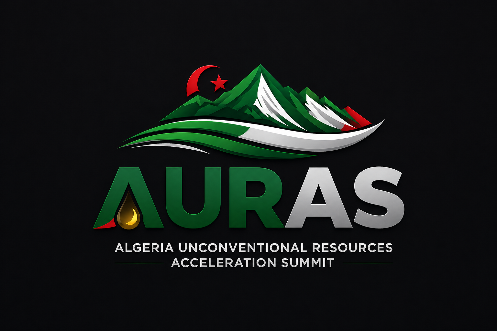

Algeria Unconventional Resources Acceleration Summit
An International Platform to Accelerate Algeria’s Unconventional Resources Exploration & Production
AURAS is a flagship international event bringing together policymakers, national and international oil companies, service providers, technology leaders, and investors to accelerate the exploration and production of Algeria’s unconventional resources.
The summit focuses on transforming Algeria’s vast unconventional resource potential—particularly shale gas and tight reservoirs—into commercially viable and sustainable production.